Bem-estar emocional
Ansiedade sob Controlo no Dia a Dia
Técnicas simples de pausa, respiração e organização dos pensamentos para os momentos de tensão. Com exercícios, kit SOS pessoal e plano de 14 dias.
R$ 22,90Ver detalhes →
E-books práticos em PDF
A Caderno Leve cria guias curtos, numa linguagem simples e acolhedora, para cuidar das emoções, das relações, do dinheiro e da rotina. Cada e-book inclui exercícios, checklists e um plano de ação para começar hoje.
Exercícios, checklists e passos concretos em vez de teoria complicada.
Texto simples e direto, sem promessas milagrosas.
PDF para ler no telemóvel, no computador ou para imprimir.
Pagamento e entrega pela Kiwify, logo após a compra.
17 e-books disponíveis · novos títulos a chegar em breve
Técnicas simples de pausa, respiração e organização dos pensamentos para os momentos de tensão. Com exercícios, kit SOS pessoal e plano de 14 dias.
Um kit de respirações curtas para acalmar o corpo em qualquer lugar. Técnicas de 1 a 5 minutos, plano de 14 dias e folha de registo.
Aprenda a meditar do zero com 4 guiões orientados de 5 a 15 minutos para ler ou gravar com a sua voz, práticas para o dia a dia e um plano de 21 dias.
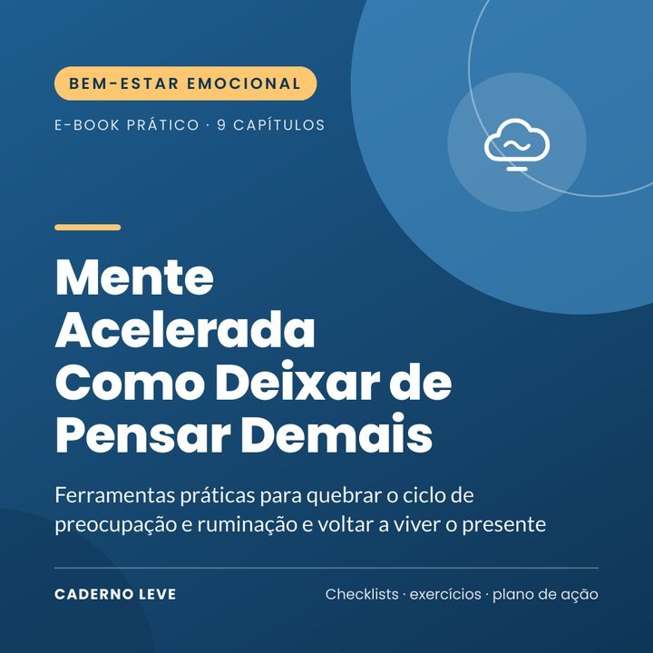
Ferramentas práticas para quebrar o ciclo de preocupação e ruminação: pergunta-chave, despejar a mente no papel, momento da preocupação e muito mais. Com plano de 14 dias.
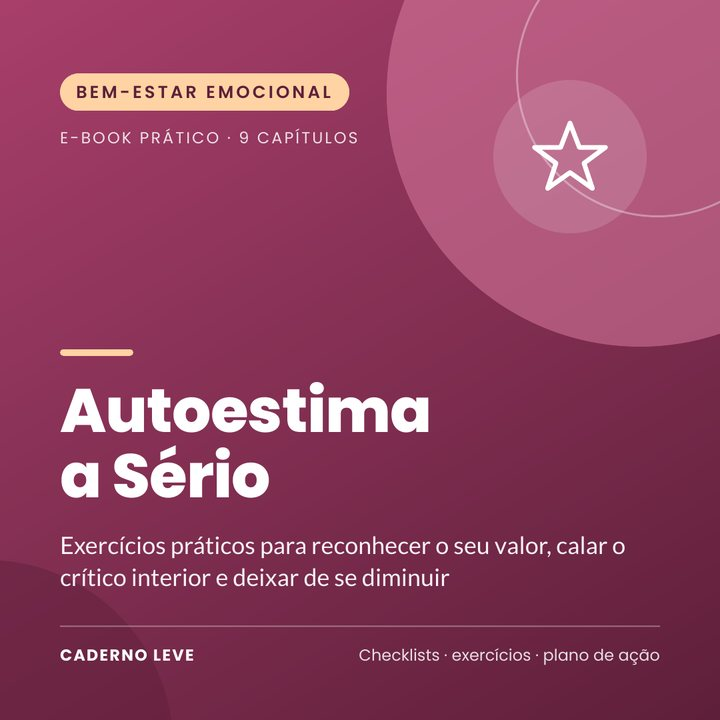
Exercícios práticos para reconhecer o seu valor, responder ao crítico interior e deixar de se diminuir. Com diário de provas e plano de 21 dias.
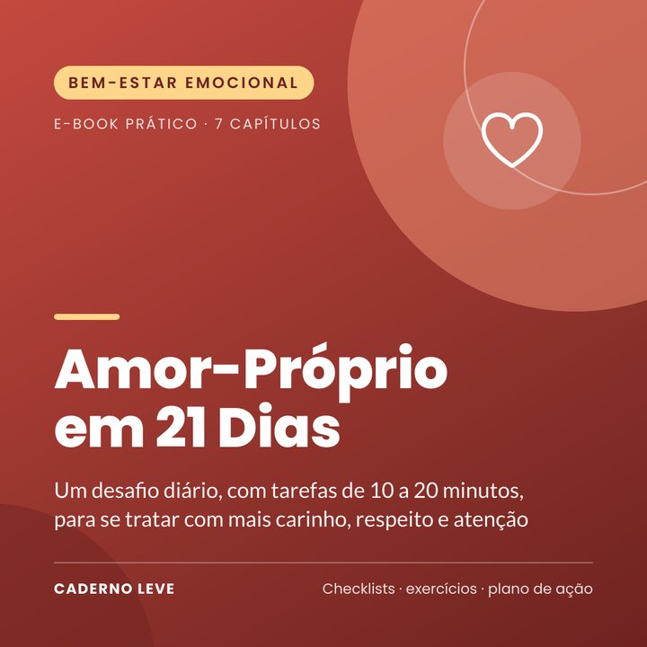
Um desafio diário de 21 dias, com tarefas de 10 a 20 minutos, para se tratar com mais carinho. Com calendário, ficha de trabalho e práticas para os dias difíceis.
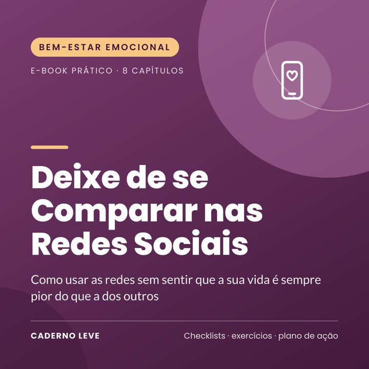
Como usar as redes sem sentir que a sua vida é pior do que a dos outros: gatilhos, limpeza no feed, regras de utilização e ferramentas contra a comparação. Plano de 14 dias.
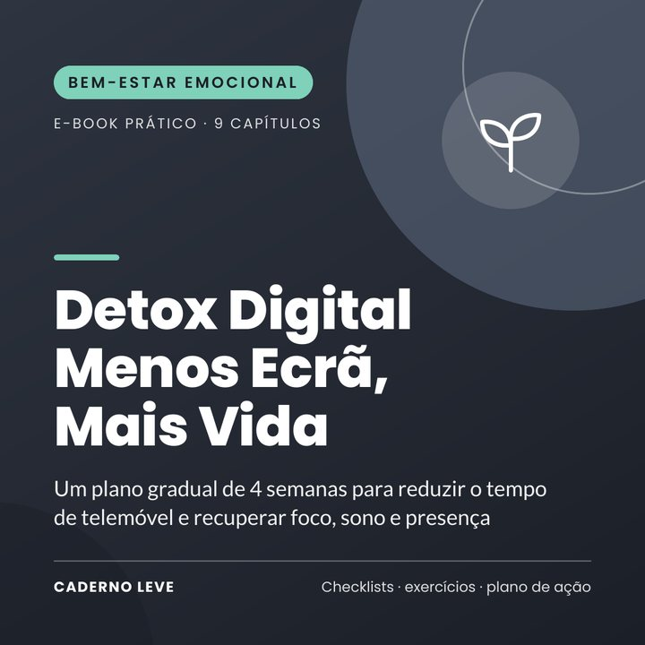
Um plano gradual de 4 semanas para reduzir o tempo de telemóvel sem radicalismos e recuperar foco, sono e presença. Com mapa de utilização, acordos em família e checklist.
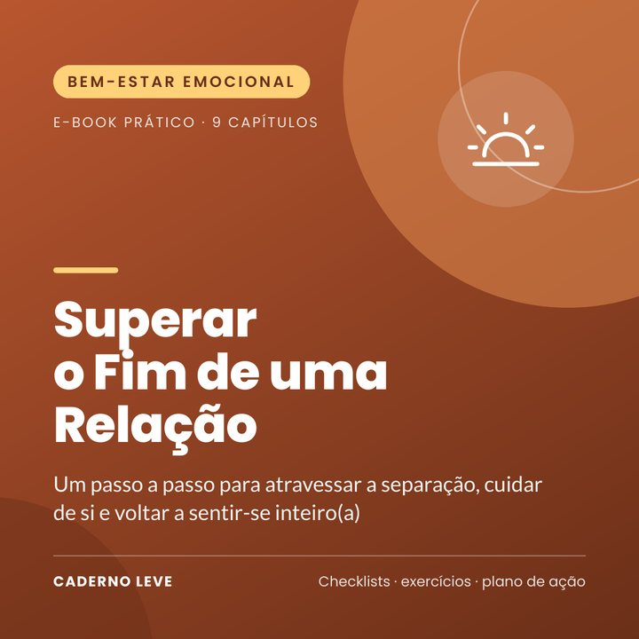
Um passo a passo acolhedor para atravessar a separação: kit de sobrevivência, contacto zero, emoções, rotina nova e quando procurar ajuda. Plano de 30 dias.
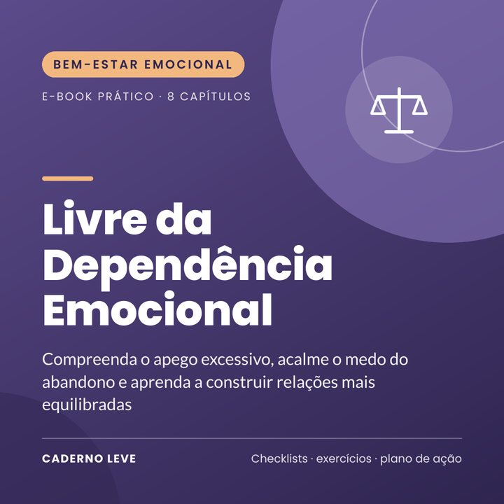
Compreenda o apego excessivo, acalme o medo do abandono e construa relações mais equilibradas. Com exercícios, alertas sobre relações abusivas e um plano de 30 dias.
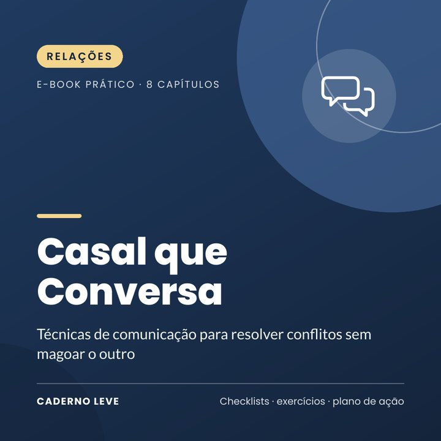
Técnicas de comunicação para resolver conflitos sem magoar o outro: início suave, escuta a sério, pausa, reparação e acordos. Com um plano de 4 semanas para o casal.
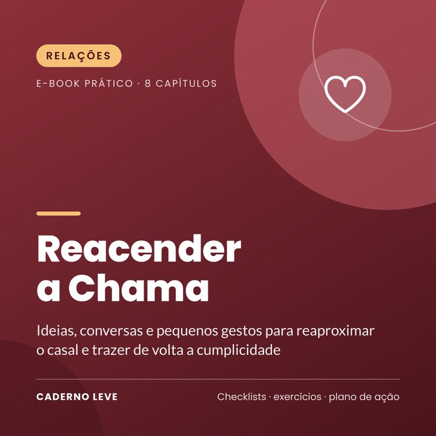
Ideias, conversas e pequenos gestos para reaproximar o casal: diagnóstico da relação, 30 ideias de encontros, perguntas que aproximam e um desafio de 30 dias.
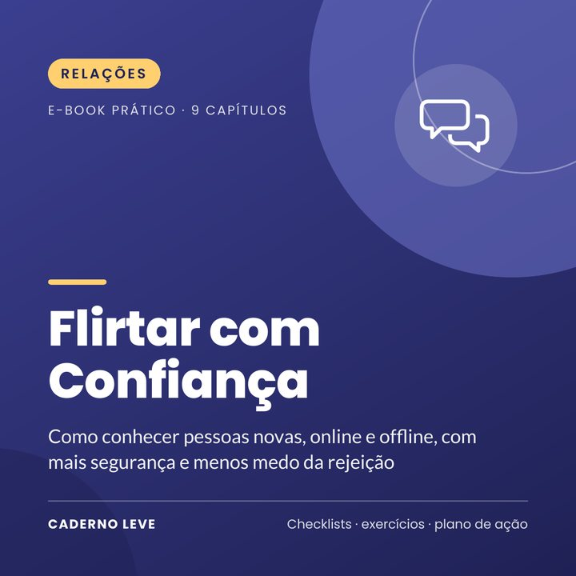
Como conhecer pessoas novas, online e offline, com menos medo da rejeição: conversas, aplicações, primeiro encontro, segurança e um plano de 4 semanas.
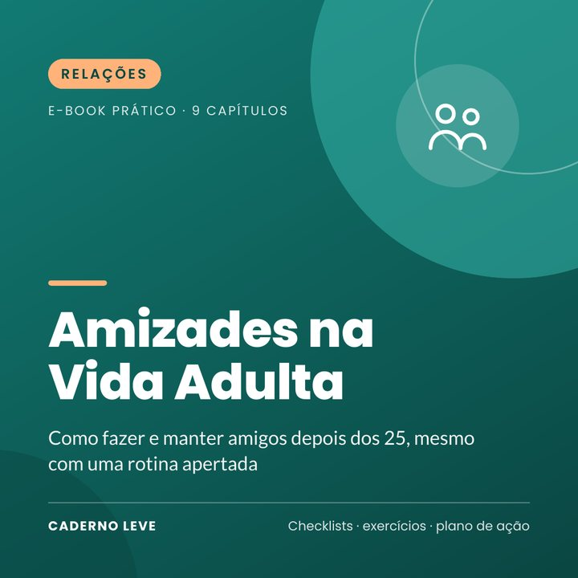
Como fazer e manter amigos depois dos 25, mesmo com uma rotina apertada: reativar laços, onde conhecer pessoas, convites, rituais e um plano de 30 dias.
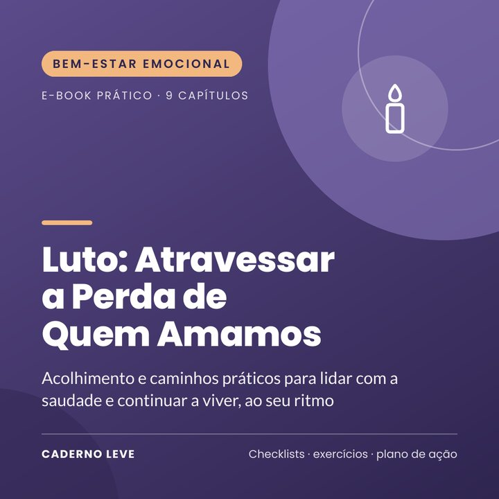
Acolhimento e caminhos práticos para atravessar o luto: o que é normal sentir, ondas de saudade, culpa, datas difíceis, crianças e quando procurar ajuda.
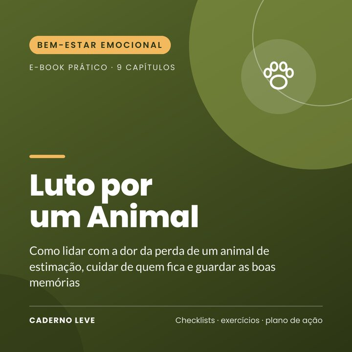
Acolhimento para quem perdeu um animal de estimação: culpa e eutanásia, despedida e rituais, crianças, outros animais da casa, homenagens e folha de memórias.
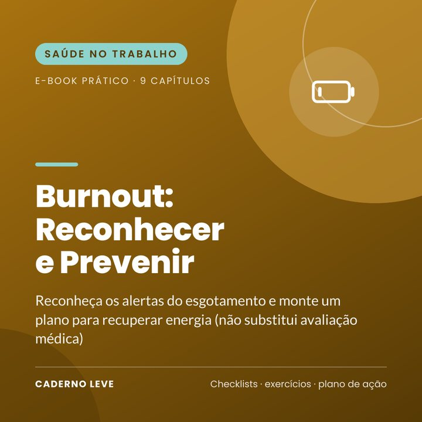
Reconheça os alertas do esgotamento, faça uma autoavaliação, imponha limites e monte um plano para recuperar energia. Não substitui avaliação médica.
A compra é feita através da Kiwify. Depois de o pagamento ser confirmado, a Kiwify dá-lhe acesso ao PDF e envia as instruções para o e-mail indicado na compra.
Em PDF (formato A4). Pode lê-lo no telemóvel, no tablet ou no computador, e imprimir as folhas de exercícios.
Cada e-book custa R$ 22,90. O preço está em reais brasileiros (BRL) e, no pagamento, vê o valor na sua moeda. Os meios de pagamento disponíveis aparecem na página de pagamento da Kiwify.
Não. O conteúdo é educativo e de autocuidado. Para questões de saúde, saúde mental, finanças ou direito, procure um profissional. Em sofrimento emocional, contacte uma linha de apoio emocional do seu país; em caso de emergência, ligue para o número de emergência local.
Por e-mail: contato@seudominio.com.br.